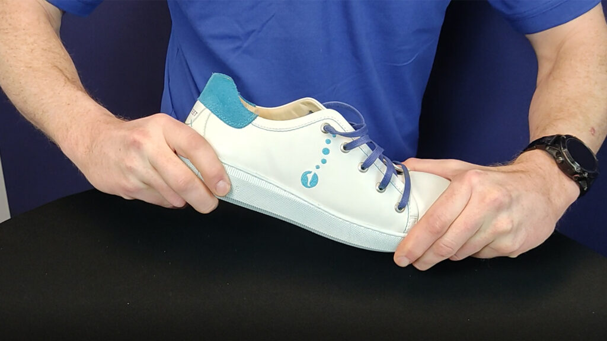

Diensten
Een consultatie bij Podologie Sole Solutions bestaat uit verschillende stappen. We doen standaard een biomechanisch onderzoek en een ganganalyse. Op basis hiervan wordt er al dan niet een podologische zool volledig op maat gemaakt. Tot slot geven we altijd schoenadvies mee en eventuele veiligheidsschoenen worden dan ook besproken.

BIOMECHANISCH ONDERZOEK
Na een uitgebreid gesprek om zoveel mogelijk informatie te verzamelen over de klachten en de activiteiten wordt een biomechanisch onderzoek uitgevoerd. Hierbij wordt gekeken naar de functionaliteit van de gewrichten en worden verschillende klinische metingen uitgevoerd. Hierbij worden testen uitgevoerd om de spieren te beoordelen op lengte en op kracht.
GANGANALYSE
Na het biomechanisch onderzoek gaan we over naar de ganganalyse. Hierbij wordt met behulp van een high tech camera het stappen en eventueel lopen gefilmd op de loopband. Met deze beelden wordt dan een podologisch rapport opgesteld waarvan de resultaten nadien worden besproken.


PODOLOGISCHE ZOLEN
Op basis van de resultaten uit voorgaande fases ontwikkelen we een zool die u het beste kan helpen. Met behulp van een scan van de voet wordt de zool volledig op maat ingetekend. Hierbij worden dan eventuele correcties en aanpassingen verwerkt in het design van de zool, zodat deze volledig is afgesteld op voettype, gangpatroon en eventuele klachten.
Omdat wij altijd zoeken naar de oorzaak van de klacht, is het niet vanzelfsprekend dat je met zolen naar buiten gaat. Soms liggen andere factoren aan de oorzaak van de klachten. In dat geval sturen wij de patiënt na de screening door naar een andere arts.
SCHOENADVIES
De voet is de basis van het lichaam, dus vanzelfsprekend is de keuze van schoen heel belangrijk. Je neemt dus best alle schoenen mee die je draagt. Alle schoenen worden geanalyseerd tijdens de screening. Er zal dan ook uitgebreid schoenadvies gegeven worden.
VEILIGHEIDSSCHOENEN
Bij Podologie Sole Solutions bieden we ook gecertificeerde zolen voor veiligheidsschoenen aan. Zo ervaar je de comfort van de zool ook tijdens het werk. Breng dus zeker je veiligheidsschoenen mee naar de consultatie.